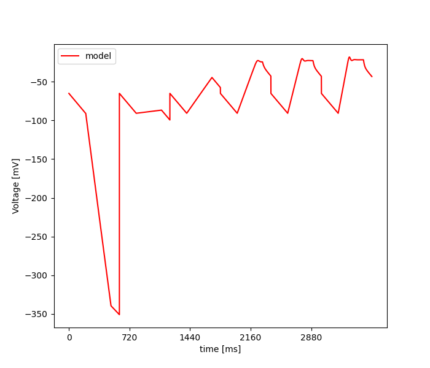

Thu Jul 28 22:28:59 2022
Optimization of ca3_minimum_model.hoc based on: /home/mohacsi/Desktop/optimizer/optimizer/new_test_files/ca3_minimal/opt_data_JMakara_OUR_features_selected_stim.json
Results
| Parameter Name | Minimum | Maximum | Optimum |
|---|---|---|---|
| gmax_Leak_pyr | 5e-08 | 5e-05 | 5.24975e-08 |
| e_leak_pyr | -90.0 | -50.0 | -2525.5160543111783 |
| gmax_CaL_pool2_inact_params_minimal_eca | 0.0002 | 0.2 | 0.00036763708623876236 |
| A_alpha_X_CaL_pool2_inact_params | 0.1 | 0.5 | 0.30000000000000004 |
| B_alpha_X_CaL_pool2_inact_params | 10.0 | 20.0 | 138.86485794548295 |
| Vhalf_alpha_X_CaL_pool2_inact_params | -10.0 | 10.0 | 54.169926339944055 |
| Y_v0_CaL_pool2_inact_params | -30.0 | 0.0 | -930.0 |
| Y_k0_CaL_pool2_inact_params | -10.0 | -1.0 | -100.0 |
| Y_tau0_CaL_pool2_inact_params | 100.0 | 600.0 | 140960.19622955457 |
| gmax_K_DRS4_params_voltage_dep | 0.0001 | 0.1 | 0.00023835154970494788 |
| gkd_kd_params3 | 1e-05 | 0.1 | 0.00477270243773408 |
| theta_a_kd_params3 | -70.0 | -50.0 | -1212.3284303057733 |
| theta_b_kd_params3 | -120.0 | -60.0 | -6621.295643107861 |
Fitness: [392.0944824730866]

seed = 1234
current_algorithm = PSO - Pygmo
num_params = 13
boundaries = [[5e-08, -90.0, 0.0002, 0.1, 10.0, -10.0, -30.0, -10.0, 100.0, 0.0001, 1e-05, -70.0, -120.0], [5e-05, -50.0, 0.2, 0.5, 20.0, 10.0, 0.0, -1.0, 600.0, 0.1, 0.1, -50.0, -60.0]]
starting_points = []
algorithm_parameters = {'number_of_generations': 10, 'size_of_population': 10, 'omega': 0.7298, 'eta1': 2.05, 'eta2': 2.05, 'max_vel': 0.5, 'variant': 5, 'neighb_type': 2, 'neighb_param': 4, 'memory': False, 'number_of_islands': 1}
feats = Spikecount, inv_first_ISI, inv_last_ISI, inv_time_to_first_spike, steady_state_voltage, voltage_base, voltage_deflection, voltage_deflection_begin, AHP_depth_abs, AHP_time_from_peak, AP2_amp, AP_amplitude, AP_begin_voltage, AP_duration_half_width, AP_fall_time, AP_rise_time, APlast_amp, time_to_last_spike, sag_amplitude, sag_ratio1
weights = [0.05, 0.05, 0.05, 0.05, 0.05, 0.05, 0.05, 0.05, 0.05, 0.05, 0.05, 0.05, 0.05, 0.05, 0.05, 0.05, 0.05, 0.05, 0.05, 0.05]
user function =
def usr_fun(self,v):
#13
#gmax_Leak_pyr
#e_leak_pyr
#gmax_CaL_pool2_inact_params_minimal_eca
#A_alpha_X_CaL_pool2_inact_params
#B_alpha_X_CaL_pool2_inact_params
#Vhalf_alpha_X_CaL_pool2_inact_params
#Y_v0_CaL_pool2_inact_params
#Y_k0_CaL_pool2_inact_params
#Y_tau0_CaL_pool2_inact_params
#gmax_K_DRS4_params_voltage_dep
#gkd_kd_params3
#theta_a_kd_params3
#theta_b_kd_params3
for sec in h.soma:
sec.gmax_Leak_pyr = v[0]
sec.e_Leak_pyr = v[1]
sec.gmax_CaL_pool2_inact_params_minimal_eca = v[2]
sec.A_alpha_X_CaL_pool2_inact_params_minimal_eca = v[3]
sec.A_beta_X_CaL_pool2_inact_params_minimal_eca = v[3]
sec.B_alpha_X_CaL_pool2_inact_params_minimal_eca = v[4]
sec.B_beta_X_CaL_pool2_inact_params_minimal_eca = -v[4]
sec.Vhalf_alpha_X_CaL_pool2_inact_params_minimal_eca = v[5]
sec.Vhalf_beta_X_CaL_pool2_inact_params_minimal_eca = v[5]
sec.Y_v0_CaL_pool2_inact_params_minimal_eca = v[6]
sec.Y_k0_CaL_pool2_inact_params_minimal_eca = v[7]
sec.Y_tau0_CaL_pool2_inact_params_minimal_eca = v[8]
sec.gmax_K_DRS4_params_voltage_dep = v[9]
sec.gkd_kd_params3 = v[10]
sec.theta_a_kd_params3 = v[11]
sec.theta_b_kd_params3 = v[12]